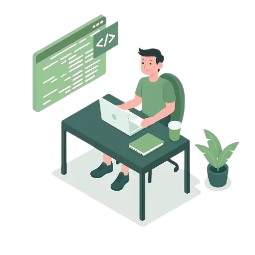

I am Suparno Dey. I'm a
|
Welcome to my corner of the Web~

Let Me Introduce Myself
I am Suparno Dey, a curious and enthusiastic student with a deep passion for learning new skills and expanding my knowledge. I enjoy tackling challenging problems, exploring the latest in technology, and experimenting with innovative ideas. Building small projects and understanding how things work gives me immense satisfaction and keeps me motivated..
In my free time, I play games, practice music, exercise a bit, and learned Python from CS50 and C++, along with reading about science and coding ideas that help me grow and create.
Learn More